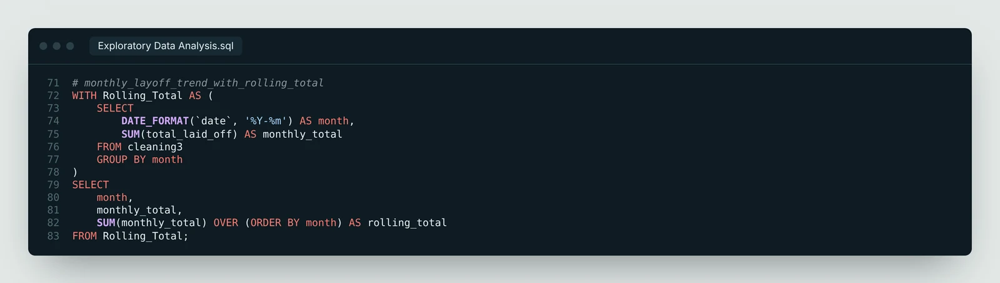
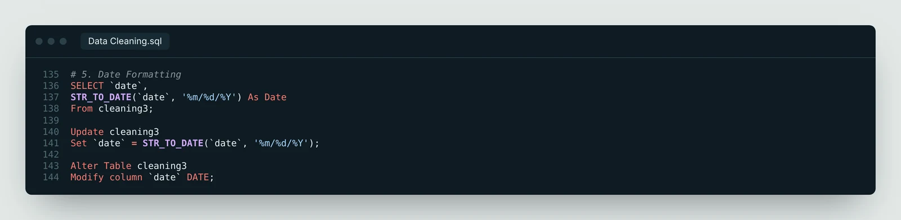

Global layoff analysis
SQL analysis of layoffs across industries, countries, company stages and time.

The challenge
Layoff data is messy and inconsistent. It needed cleaning before it could say anything reliable about which industries, countries and kinds of company were cutting jobs, and when.
My approach
I used SQL for the whole pipeline: a staging table for cleaning, then exploratory queries grouped by industry, company, country, stage and month.
Process
- Removed duplicates, handled missing values and fixed inconsistent entries.
- Ranked industries, companies, countries and funding stages by layoffs with GROUP BY and aggregate queries.
- Tracked layoffs by country and industry per year, and by month.
- Built a rolling total to show the cumulative effect over time.
What I found
- The largest single layoff in the data came from the Consumer industry, at 12,000 people.
- Some companies laid off 100% of staff, pointing to closures or market exits.
- A small number of companies account for a large share of all layoffs.
- Layoffs come in monthly spikes rather than a steady trend, and the rolling total keeps rising.
Recommendations
- Flexible staffing and demand forecasting in high-risk industries.
- Cash reserves and more diverse revenue to absorb shocks.
- Hiring for early-stage companies that tracks realistic revenue.

